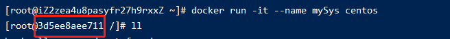
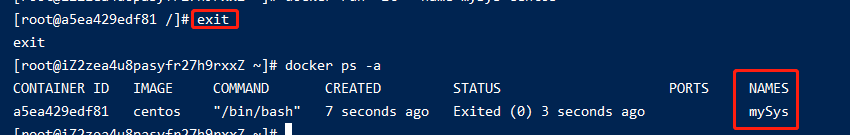
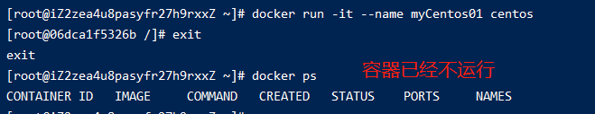
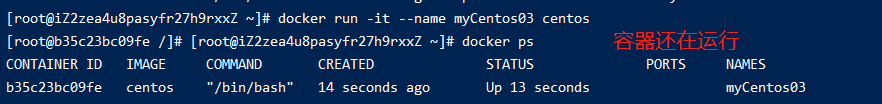
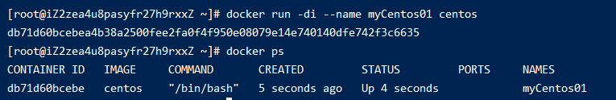
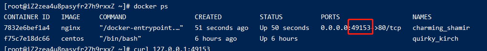
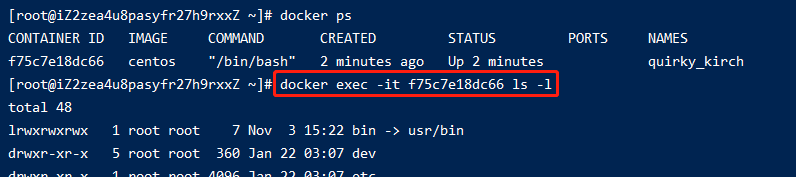
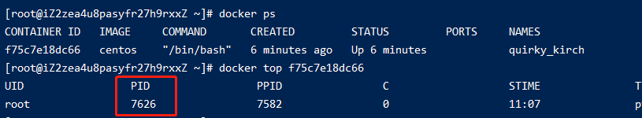
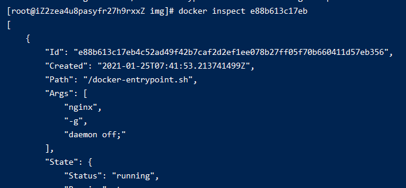

006-docker容器命令
1、创建启动容器
docker run [配置] image [命令] [参数]
1.1 交互式启动
docker run -it --name 别名 镜像ID: 运行镜像，并为其起个别名，并且交互模式运行，以及分配一个伪终端
这种启动会进入镜像里面，常用于比如centos镜像等系统镜像
比如执行docker run -it --name mySys centos后

从截图可以看出已经是进入了centos系统里面了，退出的话敲exit
而--name的作用是起别名，会作为容器的name属性，如下图

进入容器后的退出
退出有2种方式: exit 和 ctrl+P+Q。前者是退出并容器停止，后者是退出容器继续运行
- exit的退出

ctrl+P+Q
1.2 守护进程的方式启动
docker run -id --name 别名 镜像ID: 用守护进程的方式启动，和-it的区别是不会进入容器里面

总的说:
-i: 以交互模式运行容器，通常与 -t 同时使用-t: 为容器重新分配一个伪输入终端，通常与 -i 同时使用-d: 后台运行容器，并返回容器ID
1.3 端口映射
-p 或 -P: 前者固定宿主机端口，格式宿主机端口:容器端口。后者宿主机随机端口
docker run -it -p 8888:80 nginx: 宿主机的8888端口映射到容器里面，这个时候访问http://aaa.com:8888就可以访问到docker run -it -P nginx: 宿主机的随机端口映射到容器里面，如果想要看这个随机端口是多少，可以执行docker ps命令

2、列出容器
docker ps [参数]
2.1 可选参数
| 参数 | 说明 |
|---|---|
| -n 数字 | 列出最近的几个容器 |
| -a | 列出所有容器，包括已经停止的 |
| -f status=exited | 查看已经停止的 |
2.2 列出最近的几个容器
docker ps -n 2: 列出最近启动的2个容器
2.3 查看已经停止的
docker ps -f status=exited
3、退出容器
退出有2种方式: exit 和 ctrl+P+Q。前者是退出并容器停止，后者是退出容器继续运行
- exit的退出
ctrl+P+Q
4、进入容器
docker attach [容器id或容器名]: 进入正在运行的容器内部，这种一般进入centos等镜像
docker exec -it [容器id或容器名] [命令]: 进入容器执行命令，然后退出容器回到宿主机。这种一般用于redis/nginx等镜像

比如要进入nginx镜像里面，执行docker exec -it nginx /bin/bash
5、启动容器
docker start [容器id或容器名]: 将已停止的容器启动
6、重启容器
docker start [容器id或容器名]: 将正在运行的容器重启
7、停止容器
docker stop [容器id或容器名]: 将正在运行的容器停止掉
docker kill [容器id或容器名]: 将正在运行的容器停止掉，不推荐
8、删除容器
docker rm [容器id或容器名]: 将已停止的容器删除，
8.1 强制删除
如果是正在运行的，需要强制删除docker rm -f
8.2 删除多个
docker rm [容器id或容器名] [容器id或容器名]: 多个容器之间用空格隔开
8.3 删除所有容器
docker rm $(docker ps -qa): 删除所有容器
9、查看容器日志
docker logs [容器id或容器名]
10、查看容器的进程
docker top [容器id或容器名]: 查看正在运行的容器的进程

11、复制
docker cp [宿主机要拷贝的文件] [容器id或容器名]:[容器目录]: 宿主机copy到docker容器里面docker cp [容器id或容器名]:[容器目录] [宿主机要存的位置]: docker容器copy到宿主机
简单的做，源文件在前，目标位置在后
12、查看详细信息
docker inspect [容器id]可以查看容器的详细信息
